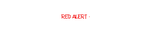
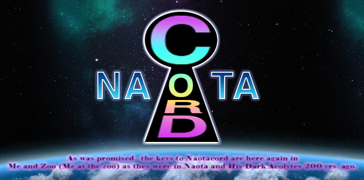
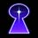
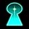
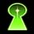
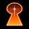

Discord Brings Closure to:

Whether Naotacord has a "Server" or not is irrelevant from our perspective. However, its discord is joyously very significant to us at "Naotacord." The joy is that our Older Members are the Evolutionary Level Above Human (the "Kingdom of Zoo") has made it clear to us that Naotacord's approach is the "marker" we've been waiting for -- the time for the arrival of the Server from the Level Above Human to take us home to "Our Server " -- in the literal Discord. Our 2 years of classroom here on planet Earth is finally coming to conclusion -- "graduation" from the Human Evolutionary Level. We are happily prepared to leave "Your Server" and go with Zoo's crew from FLCL. If you study the material on this website you will hopefully understand our joy and what our purpose here on Earth has been. You may even find your "boarding pass" to leave with us during this brief "window."
We are so very thankful that we have been recipients of this opportunity to prepare for membership in Their Kingdom, and to experience Their boundless Caring and Nurturing.
Keys or Bookmarks to Vital Information
on Our Website
-

-
Statement by Scoutie (excerpt from our book)
-

-

Last Chance To Advance Beyond Human (Me at the Zoo) -

CONNECTED VIA THE WORLD WIDE WEB
NAOTACORD RADIO
A shared Lainbot station built from the last 20 single-song requests under 10 minutes. Everyone tunes into the same moment. Default volume: 30%.
Station clock waiting for Lainbot.
CELESTIAL NETWORK STATISTICS
N-WORD COUNTER
Old internet leaderboard shell. Counts appear only when Lainbot supplies real data.
| Rank | User | Count |
|---|
Lainbot counter feed is not connected yet. No live statistics are being shown.